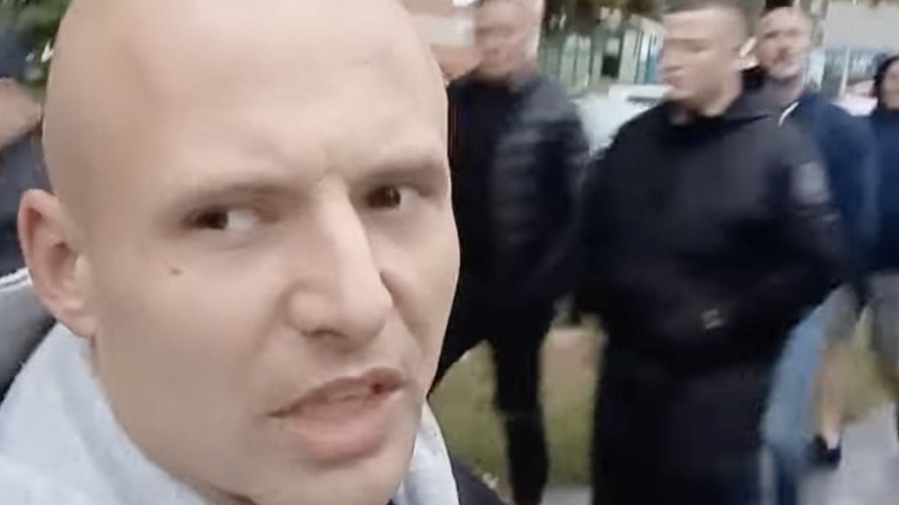

Patrole społeczne na osiedlach – pilotaż

Impulsem do organizacji patroli było fizyczne starcie między grupą Polaków a grupą migrantów z Ameryki Łacińskiej, do którego doszło na plaży nad Jeziorem Grzymysławskim w Śremie.
Jak podaje portal ePoznan.pl, pierwszy patrol zebrał się w Kórniku, a zorganizował go lokalny zawodnik MMA Rafał Podejma, prowadzący na YouTubie kanał Antykonfident...

Czym kończy się połączenie płynącej od głównych aktorów politycznych retoryki demonizującej migrantów...